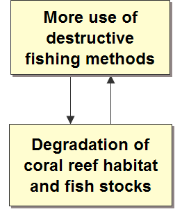
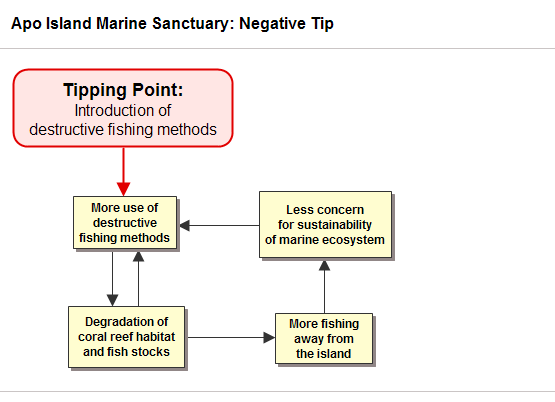
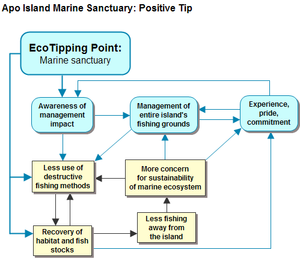
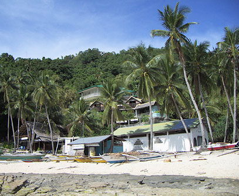
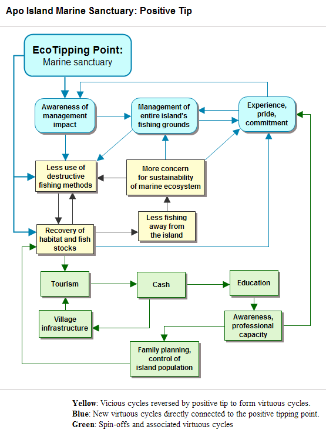
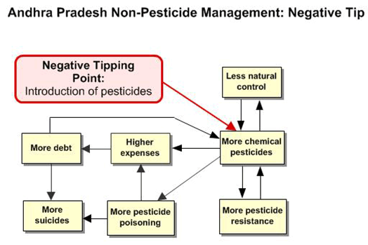
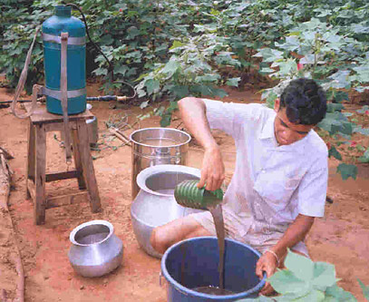
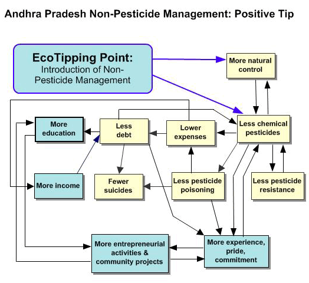

Ecotipping Points: Levers for Sustainability
- Author: Gerald G. Marten
- Second International Conference on Successful Cases for Development of Sustainable Societies, Boca del Río, Veracruz, México, May 5-8, 2008
- This article was published in Casos Exitosos en la Construcción de Sociedades Sustentables, p. 33-58, Universidad Veracruzana, Xalapa, Mexico. Download (PDF)
The problem with environmental problems is they are so overwhelmingly complex, so overwhelming in scale, and driven by overwhelmingly powerful social and ecological forces. Often it seems we are swimming helplessly against the current when we try to make a positive change. I want to tell you about an approach to this problem that makes the complexity more manageable, while pointing to what we can do to make things better.
Over the years, as a systems ecologist focusing on human ecology (Marten 2001), I have seen and heard about situations that have been turned around from disaster or potential disaster and put on a track to sustainability. I have wondered what factors are at play in these situations, and in recent years, set about investigating this. My goal now is to disseminate what I have found to be useful, so people can be more effective at creating solutions for their communities.
During the past several years I have collaborated with a journalist, Amanda Suutari, to look for lessons in environmental success stories. We collected about a hundred stories from around the world, and made site visits to document twenty of the stories. We went to India, Southeast Asia, and the United States.
We found that the scripts of the stories had a lot in common. In every story, biodiversity, ecosystem integrity, and ecosystem health went hand in hand with human well being. And in every story, the sweeping changes from environmental decline to restoration could be traced back to a lever – a lever that set the change in motion. I call this lever an “Ecotipping Point” (Marten et al. 2005, ecotippingpoints.org).
The Apo Island Story
I am going to tell you three stories from Asia to show you what I mean. First is the Apo Island story (Russ et al. 2004, Raymundo and White 2005, Marten 2005) The artisenal near-shore fishery in the Philippines used to be immense –a million tons per year. Now it is in big trouble, which began in the 1960s with destructive fishing methods such as dynamite and cyanide. These methods were very effective for catching fish, but not good for the long term. The fishery descended into a vicious cycle of damaging the coral reef habitat, dwindling fish stocks, and the need to do even more destructive fishing to catch much at all.

Figure 1. Vicious cycle of destructive fishing and degradation of coral reef habitat and fish stocks.
Fishermen had to paddle longer and longer distances from home, working very long hours, searching for places that still had enough fish – and fishing destructively to get all they could. With “hit and run” fishing, they no longer cared about the future where they fished.

Figure 2. Two interconnected and mutually reinforcing vicious cycles driving the decline of the Philippine near-shore fishery. One is a spiral of declining fish stocks and more destructive fishing, and the other is fishing further away from home, where sustainable fishing does not matter.
The Philippine government reacted with laws against destructive fishing, but they were not effective. Overall, fish stocks are now less than 5% of what they were fifty years ago. In many places, a fisherman may catch only one or two fish in a day – or perhaps none.
But that has not happened everywhere. Twenty-eight years ago, Apo Island was well into the downward spiral, but the people there broke out of it.

Figure 3. Apo Island Coral-Reef Fisherman.
The switch began when a marine scientist (Angel Alcala) at nearby Silliman University talked with Apo’s fishermen about what was happening and what they might do about it. The dialogue continued for two years, and in 1982 the fishermen decided to set off 450 meters of the island’s shoreline, 10% of the fishing grounds around the island, as a no-fishing zone: A marine sanctuary to help replenish fish stocks around the rest of the island. The islanders were not sure it would improve their catches. No-fishing reserves were not a Philippine tradition. The fishermen played it safe by picking an area where the fish were badly depleted. There was not much to lose. Enforcement was easy: one person on the beach to watch the sanctuary, a task rotated among the island families.

Figure 4. Apo Island’s marine sanctuary.
Three years later, the sanctuary had an amazing number of fish. The best place to fish was just outside the sanctuary, but more important, the fishermen were so inspired by what happened inside the sanctuary, they decided to do something about the rest of the island’s fishing grounds. The fishermen made, and enforced, two rules: Only Apo Island fishermen could fish there, and no destructive fishing. They decided to return to traditional fishing methods such as hook-and-line, fish traps, and large-mesh gillnets.
The new rules put Apo’s fishermen into conflict with higher levels of government that had the authority for fisheries management. Fortunately, a Philippine NGO helped the local island government to arrange the legal authority to control its own fishing grounds. For enforcement, Apo fishermen created a “marine guard” consisting of local volunteers.
There was rapid improvement in the island’s fishery, though it took nearly ten years for stocks of the largest, most valuable fish to recover fully. Bit-by-bit, as fish stocks recovered around the island, the fishermen did more of their fishing at home. Now they do all their fishing at the island, where a few hours of fishing each day get them all they need. They care deeply about the future of the fishery because it is theirs. Figure 5 shows how the vicious cycles were reversed. Progress was reinforced by new “virtuous cycles” involving awareness, experience, pride, and commitment: “Success breeds success” (shown in blue).

Figure 5. Virtuous cycles that locked Apo Island into sustainability.
Blue: Vicious cycles reversed by the EcoTipping Point to form virtuous cycles.
Yellow: New virtuous cycles set in motion by the EcoTipping Point.
The restoration of Apo’s coral reef ecosystem set in motion a cascade of spin-offs reinforcing the switch into sustainability. Reef tourism brought in cash to the local government and island families. Snorkeling and diving threatened to damage the coral ecosystem, but with experience from managing their fishing grounds, the island community had the ecological savvy to oversee tourism so they realized its economic benefits with putting the coral-reef ecosystem at risk.

Figure 6. Apo Island tourist strip.
And even more significant, they used some of their earnings from tourism to improve their primary school and add a marine ecology curriculum to the school. Now many of their children go to university, with a strong commitment to sustaining the integrity of the island’s marine ecosystem. They also started a family planning program to ensure the island’s future population does not exceed the carrying capacity of their fishing grounds. Everybody’s into it. Ask the kids how many children they want, and they all say “Two!”

Figure 7. The complete system of virtuous cycles reinforcing restoration of Apo Island’s marine ecosystem and fishery, including spin-offs and associated virtuous cycles.
Everyone on the island considers the sanctuary to be sacred. They say it saved their marine ecosystem, their fishery and their way of life, but in fact the sanctuary was only the lever that got it started. It was an EcoTipping Point.
Visitors from other fishing villages throughout the Philippines have come to Apo to see what is happening, and 400 villages now have marine sanctuaries. Not all are functioning as well as they should, but many seem to be on the same path as Apo (White et al. 2002).
Read the full Apo Island story and brief narratives with diagrams for the vicious cycles and virtuous cycles of the Apo Island story and other EcoTipping Point stories.

Figure 8. Apo Island children tipping their way to a resilient and sustainable future.
What does the Apo Island Story Tell Us?
First of all, like all other EcoTipping Point stories, there were dramatic shifts in system behavior – switches from sustainability to decline, and visa versa. Second, the switches could be traced back to levers – tipping points – that set them in motion. The levers and switches form a three-act play.
Act 1: Sustainability
A time of sustainable interaction between people and their environmental support system.
Act 2: The “negative tip”
A switch from sustainable to unsustainable. Introduction of destructive fishing methods set in motion decline in the environmental support system, accompanied by decline in the well being of people who depended on that support system. There were unsuccessful attempts to deal with the problem (e.g., laws against destructive fishing). The unsuccessful efforts were “swimming against the current.”
We are surrounded by negative tips these days, but EcoTipping Point stories have:
Act 3: The “positive tip”
A switch from unsustainable to sustainable. Creation of the marine sanctuary was the lever that set restoration in motion.
An Ecotipping Point is an appropriate eco-technology, in the broadest sense of the word, combined with the social organization to put it effectively into use. Not just any eco-technology will do the job. What makes it right for a particular situation? First of all, EcoTipping Points are catalytic. They set in motion a cascade of changes, but it takes more than that. And here we come to the crux of the matter: It is all about feedback loops. If environmental decline is driven by vicious cycles, the decline will be turned around only if the vicious cycles are themselves turned around. This may not be easy. The feedback loops may be very powerful. But it is the only way to switch to a course of restoration under these circumstances.
Here is the good news. Once the vicious cycles are turned around, the very same feedback loops can work just as powerfully to bring about restoration and health. And they spin off new virtuous cycles, such as “success-breeds-success”, which accelerate the process and lock in the gains.
What does it take to reverse the vicious cycles? What are the ingredients for a successful lever? The following is what we have seen with Apo Island and other EcoTipping Point stories.
Outside stimulation and facilitation
Structured to achieve community awareness and an expanded perspective on possible actions (Rogers 2003). Not only was the marine biologist essential to getting things started, NGO assistance was critical for securing legal authority to exercise control over the local fishery, and later another NGO helped with setting up family planning.
Co-adaption between social system and ecosystem
(Marten 2001). Social system and ecosystem fitted together, functioning as a sustainable whole. As the Apo Island story progressed, perceptions, values, knowledge, technology, social organization, and social institutions all evolved in a way that enhanced the sustainability of the marine ecosystem for fishing and tourism.
Community participation
with strong local democratic institutions and long-term commitment of local leadership (Westley et al. 2007). Apo’s success did not feature top-down regulation, or elaborate development plans with unrealistic goals. At the heart of the process was “social commons for environmental commons” (Ostrom 1990) – community organization tailored to managing their common property resource, the marine ecosystem.
“Letting nature do the work.”
This is not a micro-management story. The island community gave nature the opportunity to marshal its self-organizing powers to restore the fisheries and marine ecosystem.
“The demonstration effect”.
Fish populations rebounded quickly. A quick “payback” and a powerful symbol (the sanctuary) mobilized community commitment. Normal social, economic, and political processes took it from there.
Coping with social complexity
(Tainter 1990). The larger system can present numerous obstacles to success on a local scale. For example:
- Competing demands for peoples attention, energy, and time;
- Suppression of innovation by people who feel threatened;
- Outside attempts to take over valuable resources after they are restored to health;
- Dysfunctional dependence.
Social and ecological diversity
Including social and ecological memory (Berkes et al. 2002). More diversity meant more choices and opportunities for good choices in decision making. The species richness of the marine ecosystem likewise enhanced its capacity for self-restoration. Social memory had a key role as fishermen returned to traditional fishing practices, which they knew to be functional and sustainable.
Building resilience
(Walker and Salt 2006). “Locking” into sustainability. Spinoffs from the sanctuary, such as tourist income, quality education, local women's associations, and general strengthening of community solidarity, reinforced the ability of the island community to sustain its success in the face of unknown future challenges.
Escaping the Pesticide Trap
Another story – this time from India (Ramanjaneyulu 2004, Marten and Williams 2006). This story is about pesticide dependence, but it could be dependence on fossil fuels or many other things.
Twenty-five years ago cotton production was introduced to poor farmers in Andhra Pradesh, with all the modern inputs provided on credit. At first, the farmers experienced profits like they had never known before. However, ten years later they were caught in a downward spiral of pesticide resistance, increasingly heavier pesticide applications, loss of beneficial insects and birds that preyed on the cotton pests, chronic and acute pesticide poisoning of villagers, and mounting debt due to pesticide expenses (Figure 9). The consequence was despair and the highest suicide rate in India, the method of choice for suicide being a “pesticide cocktail.”
They were trapped. They could not stop using the pesticides because natural controls were gone. The crops were a total loss without pesticides. They could not stop growing cotton because of debts to the middlemen who sold them pesticides, bought their crops, extended them credit, and demanded full payment of debts if farmers were no longer customers.

Figure 9. Vicious cycles responsible for the pesticide trap in Andhra Pradesh, India.
Like other villages in the region, Punukula village was already rock bottom when a worker from a local NGO began talking to the farmers there about Non-Pesticide Management – NPM. NPM is built around neem. The seeds and leaves of this common tree are ground into powder, soaked overnight in water, and sprayed onto the crop. The pest insects die of starvation, and beneficial insects remain unharmed.

Figure 10. Preparing neem solution.
There was more in the NPM toolkit:
- Spraying chili-garlic solution on the cotton. Insects fall off the crop. Those that prey on pest insects are unharmed.
- Applying a mixture of cow dung and urine, which acts as an insect repellent, provides favorable habitat for bacteria pathogenic to pest insects, and fertilizes the soil.
- Planting "trap crops"(e.g., sorghum, marigold, castor, and maize) around the edge of the fields to attract pest insects away from the crop.
- Manually removing and burning cotton and trap-crop branches that are heavily infested with pest insects.
- Putting out yellow or white wooden disks covered with sticky grease. The disks attract pest insects and trap them.
- Lighting small bonfires on moonless nights to attract and kill bollworm moths before they lay their eggs.
- Placing perches in the fields to attract insectivorous birds.
- Deep summer plowing to disrupt the life cycle of pest pupae in the soil.
- Applying a "nuclear polyhedral" virus extract. Naturally infected bollworm larvae, easily recognized hanging upside down from leaf edges, are gathered from the fields and ground into a solution, which is sprayed onto the crop. It is the farmers’ own biodiversity resource. No need to buy it from a high-tech multinational corporation.
- Using inexpensive pheromone tablets to attract bollworm moths for monitoring their abundance. Farmers save time and effort by spraying neem and other botanical pesticides on crops only when and where they are really needed.

Figure 11. Preparing to spray neem onto a cotton field.
One desperate farmer courageously decided to try NPM. That was the EcoTipping Point. His cotton crop with NPM had some pest damage like everyone else, but he made a nice profit because he did not pay a rupee for pesticides. Within two years everyone in the village was using NPM, and they began to climb out of debt. The middlemen retaliated by paying a lower price for NPM cotton, but the farmers formed a coop and found other buyers. You can see in Figure 12 how the vicious cycles were reversed. The birds and beneficial insects came back, so did natural control of the cotton pests, and now the farmers do not even have to use much neem.

Figure 12. Virtuous cycles leading Punukula village out of the pesticide trip and into a better life.
Yellow: Vicious cycles reversed by positive tip to form virtuous cycles.
Blue: Spin-offs and associated virtuous cycles.
Their success with NPM gave the Punukula villagers confidence to take on more challenges. They switched from chemical fertilizer to vermi-compost, reducing their input costs further. Some of the women built a business selling neem powder to other villages. The village set up local processing of cotton into cloth before selling it and established a program to rescue indentured children and return dropouts to school.
People came from other villages to see what was happening, and with assistance from local NGOs, several hundred villages now use NPM. Multi-national pesticide companies lobbied the state government to suppress NPM. But instead, the government added NPM to its agricultural extension program.

Figure 13. A woman in Punukula village explains the benefits of Non-Pesticide Management for her quality of life.
More EcoTipping Point Success Stories
Many more stories can be seen at the website: ecotippingpoints.org. For example:
- Community gardens in New York City (Marten et al. 2005) reversed a vicious cycle of urban decay, neglect, and population flight while producing food for people and habitat for urban wildlife.
- A constructed wetland at Arcata, California (Suutari and Marten 2007) provided low-cost municipal sewage processing along with first-class wildlife habitat and nature recreation in an urban setting. Expansion of constructed wetlands to surrounding towns has changed urban development in a way that helps to contain urban sprawl.
- The revival of rainwater catchment dams in Rajasthan, India (Marten et al. 2005) reversed a vicious cycle of depleted aquifers, dried-up wells and rivers, fuelwood depletion, agricultural decline, and population exodus – bringing back water, vegetation, wildlife, and a decent life for the people.
- Community mangrove management in Trang Province, Thailand (Suutari and Marten 2007) reversed a vicious cycle of mangrove destruction, coastal fisheries depletion, and local inhabitants forced into destructive activities as resources deteriorated – restoring mangrove habitat, coral reefs, coastal fisheries, and economic opportunities.
Application of EcoTipping Points – Turning around deforestation in Southeast Asia
Most recently the project has turned to application. The levers in success stories can be recognized by hindsight. But what about creating levers where a positive turnabout is not yet under way? The key is to identify the vicious cycles that are driving decline in a particular situation. The practical application of this principle is to draw upon a group’s personal knowledge to diagram the vicious cycles. A catalog of typical feedback loops – “archetypes” – can help a group to translate its knowledge into a diagram (Senge 1990, Maani and Cavana 2000, Coyle 2004).
Then comes the truly creative step, the search for levers that connect to the vicious cycles strongly enough to turn them around. The more ways they connect, the better.
Existing success stories can be a source of inspiration for effective levers. An example involving deforestation in Southeast Asia illustrates how people can extrapolate from a success story in one place to identify promising levers for a similar situation elsewhere (Marten 2008). Here is the story.
In the 1960s, commercial logging in Nakhon Sawan province, Thailand, opened up new land for in-migrating landless families to farm. It seemed a land of exhilarating opportunity. In accord with a policy to increase agricultural exports, the government provided loans and technical assistance to encourage farmers to grow cash crops such as rice, maize, jute, and cassava. The farmers never had so much money. But soon they were caught in a downward spiral that threatened to close off the prospects for a better life.
It happened because the expanding export markets for cash crops set in motion an unexpected chain of events, a negative tip in which interconnected and mutually reinforcing vicious cycles drove the landscape and the community into progressively greater decline (Figure 14):
- A shift from polyculture to monocultures of the most profitable cash crops encouraged mechanization as well as chemical fertilizer and pesticide use. Farmers went into debt to cover expenses for these farm inputs.
- Farmers cut forests to expand their farmland and earn more money to service their debts and cover increasing costs of agricultural inputs due to increasing soil and pest problems. Debt compelled people to engage in illegal logging and overexploitation of a variety of forest products on which families depended not only for cash but also home consumption.
- With deforestation, the hydrological integrity of the watershed declined, leading to more flooding, a less reliable water supply, crop damage, and family financial crises.
- Increasing debt forced family members (particularly men) to migrate to cities, seeking work to supplement their family incomes. This eroded community solidarity and traditional support systems. With fewer family members at home, the need to mechanize or hire outside labor increased farming costs further. For the first time, juvenile delinquency became a problem.

Figure 14. Vicious cycles driving deforestation in Nakhon Sawan province, Thailand.
The positive tip began when a “Save the Children” team worked with villagers to awaken their awareness about the source of their predicament. The villagers eventually realized it was they who were primarily responsible for bringing about their problems. This prompted them to consider what they could do to change the situation, based on their new understanding of the problem and its causes. They devised their own solution:
- Development of agroforestry on their farms;
- Establishment of a community-managed “protection forest”;
- A process of community dialogue and problem solving that enabled successful implementation.
Maintaining a protection forest as an integral part of the landscape provided:
- A healthy watershed with reliable water supply, flood prevention, and protection from soil erosion;
- A more secure supply of forest products for cash income and home consumption.
Agroforestry offered:
- More income from high-value tree crops (and subsequent debt reduction);
- More vegetative cover, leading to less soil erosion, increases in soil fertility, and a healthier watershed;
- Lower costs of production due to lower chemical fertilizer and pesticide use and lower labor inputs (which meant more time for farmers to contribute to their community support system);
- Greater crop diversity, providing more resilience to weather and market fluctuations.
The above changes reversed the vicious cycles in the negative tip, transforming them into virtuous cycles that fostered and sustained a healthier and more productive landscape and an economically and socially healthier community (Figure 15). The EcoTipping Point and its benefits spread to other villages in the district.

Figure 15. Reversal of vicious cycles to create virtuous cycles driving forest restoration.
The appendix at the end of this article provides a narrative of this success story as it was experienced by one of the farmers. A report from a site visit by my colleague Amanda Suutari presents the full story and extensive quotes from interviews.
Paula Manginsela (Sam Ratulangi University, Manado, North Sulawesi, Indonesia) and I have used feedback diagrams to apply the lessons from Thailand to Sulawesi, Indonesia. Villagers in Sulawesi are trapped in a vicious cycle of poverty and natural resource degradation. The downward spiral (Figure 16) is driven by a slow but steady increase in human population, which has set in motion a decline similar to the negative tip experienced by Nakhon Sawan, Thailand:
- Land shortage and poverty;
- Illegal logging to clear land for farming and get money from selling the timber;
- Overexploitation of non-timber forest products for household use and sale;
- Watershed degradation, leading to flooding in the rainy season and insufficient water supply in the dry season.

Figure 16. Vicious cycles driving deforestation in Sulawesi, Indonesia
We devised a program of facilitation, education, and training that includes elements similar to those in the story from Thailand – community forest management and incorporating agroforestry into the village farming systems – as well as additional elements of particular relevance to the local situation: expanding home industry and developing local processing of agricultural and forest products. Figure 17 shows how this program could set in motion a cascade of changes that connect to the negative tip’s vicious cycles in a way that reverses them, converting them to virtuous cycles that restore the natural resources and reduce poverty:

Figure 17. Proposed EcoTipping Point for reversing the vicious cycles, creating virtuous cycles to drive forest restoration.
The lessons and procedures from this exercise could be useful not only for the integrity of forests and watersheds throughout the tropics, and the wellbeing of communities that depend upon them; they could also have far-reaching implications for climate change, as deforestation releases carbon dioxide to the atmosphere and forest restoration sequesters carbon. Read the complete story about applying EcoTipping Points to community forests in Ampreng village, Indonesia.
Conclusions
EcoTipping Points provide a perspective for:
- Understanding the complex dynamics of environmental decline and restoration;
- Identifying doable actions to turn around environmental decline;
- Mobilizing powerful social and ecological forces to work for sustainability instead of against it.
EcoTipping Points are not silver bullets. Even the best levers will not solve environmental problems overnight. It takes a lot of hard work no matter how it is done. But in a world of limited resources, EcoTipping Points offer hope, and a fresh lens for looking at both problems and solutions. They challenge our fear that ecological problems are too big, too costly, and too complicated to solve. Actions that take account of the vicious cycles driving decline can leverage the self-organizing powers of human society and ecosystems to mend together.
I am always on the lookout for new success stories as the EcoTipping Points project moves ahead. I also welcome individuals or community groups who wish to collaborate in applying EcoTipping Points to their situation. In that way, we can apply EcoTipping Point principles and procedures at the same time we refine them.
Appendix: A Narrative – Reversing Deforestation in Nakhon Sawan Province, Thailand
In the 1960’s Thailand was ready to burst out of its third-world, agriculturally-based economy and become a modern, prosperous, industrialized nation. The government launched a Western growth model with export-led development as its centerpiece. The policy was to utilize forests and agricultural production as resources for foreign exchange revenue to generate investment in a growing manufacturing sector.
And if overall growth in gross domestic product is your yardstick, the approach was a raging success. But for small-scale farmer Thanawm Chuwaingan and millions like him, the story was entirely different.
In 1954 Thanawm migrated from the impoverished Khorat Plateau of Northeast Thailand to Khao Din village in Nakhon Sawan province, about 225 kilometers north of Bangkok, to stake a claim on newly opened forest land. According to Thanawm, “It was easy to find food. There were many edible plants and vegetables growing wild near our houses. The fish in the streams were easy to catch. There were also plenty of wild animals, like boars, deer, tigers, and elephants.”
With abundance at hand and a cooperative spirit in the village, life was good. But things started to change in the 1960’s and 1970’s. The government wanted the farmers to modernize and grow cash crops such as rice, maize, jute, and cassava for export. Forests were cut to sell the timber and expand the farmland. The government provided loans intended for inputs such as hybrid seed, chemical fertilizers, pesticides, and farm equipment.
But the farmers, who never had so much money in their pockets before, also used the loans to buy radios, motorcycles and other modern merchandise. And after the initial flush of quick cash, crop prices began to decline because so many farmers were growing the same thing. People started to fall deeper into debt.
To try and make good on their debts, villagers cut the last remnants of forest to expand their fields, since what they had was no longer enough to make ends meet. According to Thanawm, “By that time, there were virtually no trees left on the hillsides. It became hotter and drier.” The soil, which had been fertile for years, was eroded and became progressively harder with continued use of chemical fertilizers. Rainwater just ran off. Crop yields declined.
In a relatively few years, Thanawm and his family had gone from near Eden-like abundance and prosperity to environmental ruin and a hardscrabble existence typified by hunger, poverty and social disintegration.
People had to look for work in the cities during the dry season in order to pay their debts. Families were split up. Wide-scale seasonal migration in search of urban jobs led to the disintegration of communities. Villages increasingly became populated by the young and elderly. Juvenile delinquency, previously unheard of, emerged as communities were rapidly torn from their traditional social norms.
“Unlike in the past when the community was close-knit, and people really cared for one another, everyone was now worried about their own fields and their own family’s problems. Before, if anyone had a problem, others would be quick to offer their help. But now, our communities began to fall apart. For the first time ever, we began to have psychological and social problems. There was little trust and less cooperation.”
In short, the village was on what appeared to be an irreversible ecological and social slide. But fortunately the story does not end there. Thanawm and his fellow villagers made some key changes which set their village and its environmental support system in a positive direction. They created an EcoTipping Point – a combination of sensible environmental technology and the social organization to put it into use. The EcoTipping Point reversed the decline, restored ecological health, and forged a stronger, more sustainable society.
It began in 1986, when a team from the aid group Save the Children US was sent to Khao Din village by the Thai government. The district had become one of the nation’s poorest by that time. Rather than simply distributing aid from donors, which had been the pattern under the government’s modernization program, the Save the Children team awakened villagers’ awareness about the true source of their predicaments, and then helped them to devise their own solutions.
At first, the villagers were suspicious. Trust grew slowly, through long and at times arduous discussions, during which the aid workers asked villagers questions that enabled them to retrace the steps to their plight. This led to some startling realizations.
Ultimately, villagers recognized that it was they who were primarily responsible for bringing about their problems, through the decisions they had made on how to use and manage their local resources. Remembering what the land and local natural resources were like when they arrived, people kept saying: “We never thought this could happen. We couldn’t imagine this place of abundance would become a desert. My God, what have we done?”
This collective awareness was the first step in the EcoTipping Point process. It prompted the villagers to consider what they could do to change the situation, based on their new understanding of the problem and its causes.
The second step came when villagers and the project team formulated an ecologically viable strategy for their community. It began with the realization that it made no sense to “put all of their eggs in one basket,” as had been the case with the high-input monoculture cash crop systems. They designed diversified “agroforestry” systems in which trees and crops were interspersed on the same field, resembling in many ways the structure of the natural forest. They also decided to restore their damaged forests with local community protection and management.
Agroforestry was not new to the local farmers. Their now largely abandoned traditional subsistence systems had incorporated many of the same elements. It usually involves a pond or canal as a year-round source of water for crop irrigation, along with fish and edible aquatic plants. There is a broad variety of food crops such as chilies, pumpkin, beans, and other vegetables, herbs like cilantro, lemon grass, galangal, basil and mint, and fruits such as mangos, jackfruit, lime, longan, bananas, and papayas. Trees supply fruits, nuts, fuelwood, and building materials. Everything together provides a healthy diet and supplementary income.
The agroforestry drastically cut household food costs, as well as agricultural input costs, because “nature did much of the work.” It simultaneously restored some of the ecological stability to the land that forests had maintained for millennia. Year-round food security increased dramatically. If one crop failed, others would succeed.
At first, only those who could afford to try something different were able to set aside some of their land and energy for the venture. But what started on eight acres of demonstration plots grew year-by-year as more villagers adopted similar approaches on their own farms.
It is more than 10 years since Save the Children finished its project in Khao Din, now a thriving community of 2500 inhabitants. Twenty-five villages in Nakhon Sawan province are following Khao Din’s example, pursuing a variety of locally designed forms of agroforestry and sustainable agriculture on land covering thousands of acres. Recreating natural ecological processes on the farms has reestablished recycling processes similar to those in natural ecosystems. Soil erosion and degradation due to overuse of chemicals have been reversed.
Natural forests, largely devastated by misuse, are regenerating over an even larger area. The restored forests are repairing damaged watersheds. Streams, along with a variety of animals long thought to be locally extinct, have reemerged. An area which, not long ago, had resembled a desert landscape is now a site for ecotourism. Additional income comes from mushrooms and edible forest vegetables. Migration to Bangkok has declined, and the socially disruptive trends caused by urban migration and unchecked materialism are now under control.
Thanawm summed it up, “Most of all, in terms of change, was the change in people’s thinking. We are learning together as a community, sharing knowledge with each other. People no longer think we are in trouble, and we can do nothing about it.”
“We know now that with some careful thinking and a lot of shared effort, we can solve our problems, and fix what is broken. This has given our communities a tremendous boost. And it is also something that has really enabled us to influence others, whose own problems are very distressing to them, just as it was for us before.”
“Even though we don’t have much money, we’re happy. We have friends who come to visit and we have enough food for them.”
(Field interviews for this narrative were conducted by Amanda Suutari. Andrew Mittelman provided helpful information.)
References
- Fikret Berkes, Johan Colding, and Carl Folke. 2002. Navigating Social-Ecological Systems: Building Resilience for Complexity and Change. Cambridge University Press.
- Geoff Coyle. 2004. Practical Strategy: Structured tools and techniques. Prentice Hall.
- Kambiz Maani and Robert Cavana. 2000. Systems Thinking and Modelling. Prentice Hall.
- Gerald Marten. 2001. Human Ecology: Basic Concepts for Sustainable Development. Earthscan.
- Gerald Marten. 2005. Environmental tipping points: A new paradigm for restoring ecological security. Journal of Policy Studies (Japan) 20: 75-88.
- Gerald Marten, Steve Brooks, and Amanda Suutari. 2005. Environmental tipping points: A new slant on strategic environmentalism. WorldWatch Magazine 18(6):10-14.
- Gerald Marten and Donna Glee Williams. 2006. Getting Clean: Recovering from pesticide addiction. The Ecologist 36(10):50-53.
- Elinor Ostrom. 1990. Governing the Commons: The Evolution of Institutions for Collective Action. Cambridge University Press.
- G.V. Ramanjaneyulu, Kavita Kuruganti, Zakir Hussain, and K. Venu Madhav. 2004. No Pesticides, No Pests. Centre for Sustainable Agriculture, Secunderabad, India.
- Laura Raymundo and Alan White. 2005. Fifty years of scientific contributions of the Apo Island experience: a review. Silliman Journal (50th Anniversary Issue), Silliman University, Dumaguete, Philippines.
- Everett Rogers. 2003. Diffusion of Innovations (Fifth edition). Free Press.
- Gary Russ, Angel Alcala, A Maypa, H Calumpong, and Alan White. 2004. Marine reserve benefits local fisheries. Ecological Applications 14:597-606.
- Peter Senge. 1990. The Fifth Discipline: The Art and Practice of the Learning Organization. Doubleday.
- Joseph Tainter. 1990. Collapse of Complex Societies. Cambridge University Press.
- Brian Walker and David Salt. 2006. Resilience Thinking: Sustaining Ecosystems and People in a Changing World. Island Press.
- Frances Westley, Brenda Zimmerman, and Michael Quinn Patton. 2007. Getting to Maybe: How the World is Changed. Vintage Canada.
- Alan White, Catherine Courtney, and Albert Salamanca. 2002. Experience with marine protected area planning and management in the Philippines. Coastal Management 30:1-26.
Additional Reading
- Malcolm Gladwell. 2000. The Tipping Point: How Little Things Can Make a Big Difference. Little, Brown, and Company.
- Morton Grodzins. 1957. Metropolitan segregation. Scientific American 197(4):33-41.
- Gerald Marten. 2007. EcoTipping Points: The fine art of environmental aikido.
- Gerald Marten. 2008. Application of EcoTipping Points to tropical deforestation in Southeast Asia.
- Gerald Marten and Amanda Suutari. 2007. EcoTipping Points. Our Planet 17 (December):20-21.
- Amanda Suutari and Gerald Marten. 2007. EcoTipping Points: How a vicious cycle can become virtuous. Earth Island Journal 22(2):26-31.